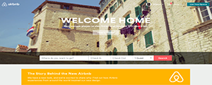

As a part of our DBC Phase 0, Unit 1 exercises, we were given the task of choosing three of our favorite websites and giving them structured reviews. While the websites I use on a day-today are more consistent with the likes of dictionary.com, etymonline.com, wikipedia, facebook, pearltrees, and gmail, I chose to review AirBnB, DropBox, and Codepens for very particular reasons which will be explained in their respective reviews.
1. AirBnB
Visual adjectives: clean, catchy, creative, simple, light
Content adjectives: well-structured, actionable by section, belo-based, practical, varied
The website has a general user menu as a header, then has the value proposition, and then gives you the option to begin exploring lodging options by choosing where/when/how many people. This is then followed by a banner, advertising the story of the new belo icon, and then a picture gallery of AirBnB main locations ensues. Following that, there is a screen-wide section for a video explaining the belo and then there are four columns with particular banners for each facet of their community module.
Visual adjectives: simple, fresh, open, inviting, innocent
Content adjectives: minimal, well-sequenced, purposeful, actionable, case-study worthy
This is one of my favorite websites because I feel the site invokes the feeling of great design, rather than the thought of it…
The website helps instruct potential adopters of the product's offering by scrolling down. Furthermore, current customers can simply log-in from the initial same page, without being visually plagued.
The only immediate actionable links on the home screen are Sign up, sign in, learn more, or download--all designated and distributed ideally. Value proposition is absolutely genius "your stuff, anywhere". The main page doesn't even include the company name, just the icon.
3. Codepen

visual adjective: dark, clean, modern, basic, cool
content adjectives: functional, accessible, clear, useful, essential
Codepen offers an incredible way to share code online, in an interactive environment that enables you to actually see the code live…within the same window! It splits your code into html, css, and javascript respectively. Also, CodePen curates the pens and showcases their display/code for website visitors. This is awesome because you can see how people code differently and how so much can created with the same "basic" toolbox of html, css, and javascript.
This website has been really helpful to see what other people are cooking with html5 and css3. It seems that css generated graphics are all the new rage, with javascript interactivity being just as cool.